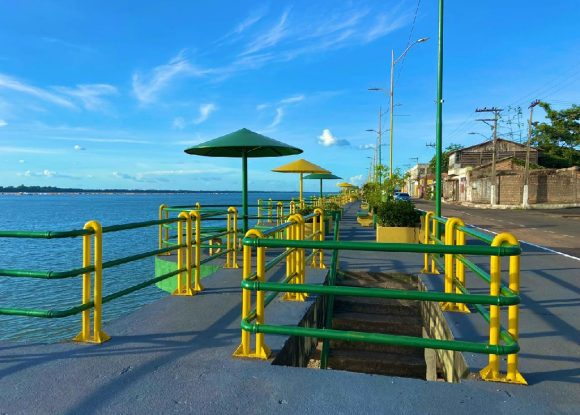

Bruno Matos da Silva
Sobre Mim
Meu nome é Bruno, sou uma pessoa dedicada, responsável e sempre disposta a aprender coisas novas. Atualmente, sou estudante da BYU-Idaho (BYU), onde curso Desenvolvimento de Software (Software Development). Tenho interesse pela área de tecnologia e programação, buscando constantemente desenvolver minhas habilidades e adquirir novos conhecimentos para construir uma carreira profissional de sucesso.
Marabá, Pará, Brasil

Marabá é uma cidade localizada no sudeste do estado do Pará, conhecida por sua beleza natural e pela riqueza de seus rios. Um dos seus principais pontos turísticos é a Orla de Marabá, onde acontece o encontro dos rios Tocantins e Itacaiúnas. O local é muito visitado por moradores e turistas, oferecendo uma bela paisagem e um espaço agradável para passeios e momentos de lazer.